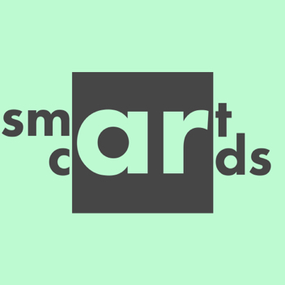

SmartCards
Enhancing education through technology that comes to life

BIO
SmartCards is the future of education technology. Our aim is to bring inclusion to the forefront of learning and to create platform that allows every student to thrive.
As the world evolves and adapts to utilize technology in new and innovative ways, it seems as though schools have remained stagnant in their ways. SmartCards uses Augmented Reality technology as well as innovative machine learning concepts in order to allow students to interact with their currculum like never before
Learn More